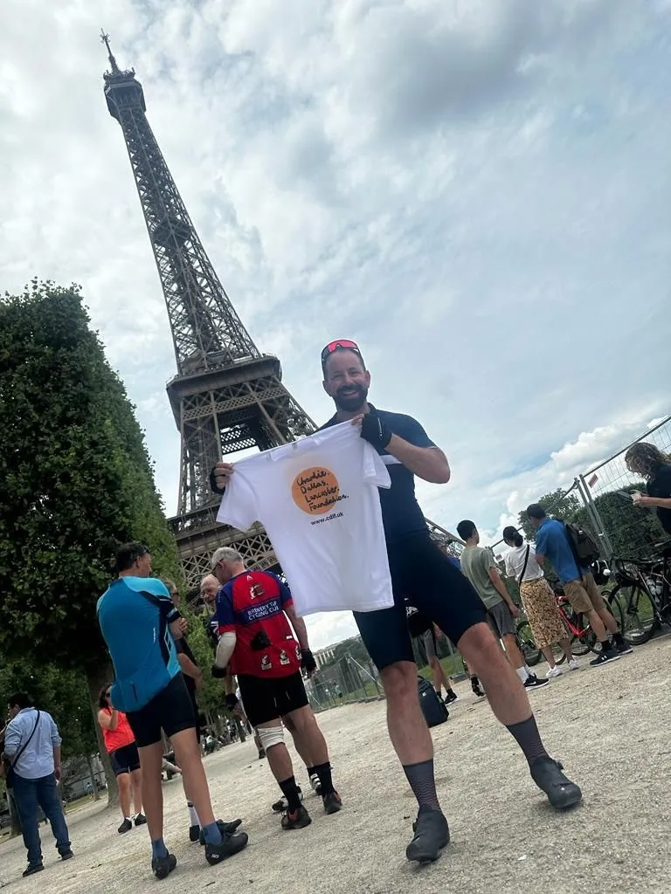
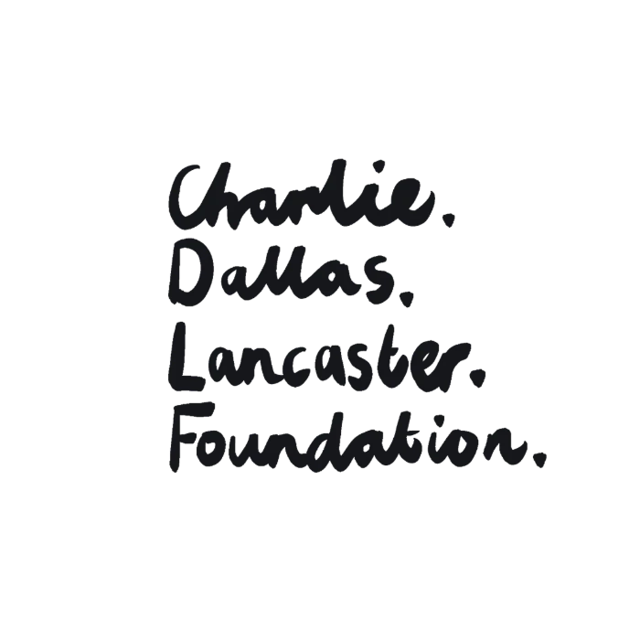
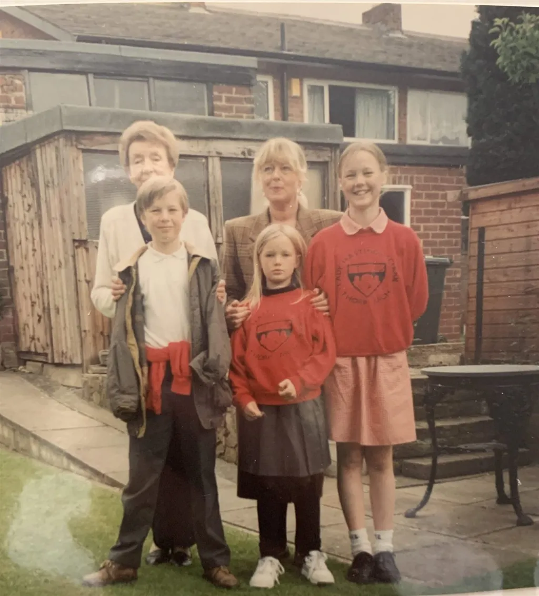
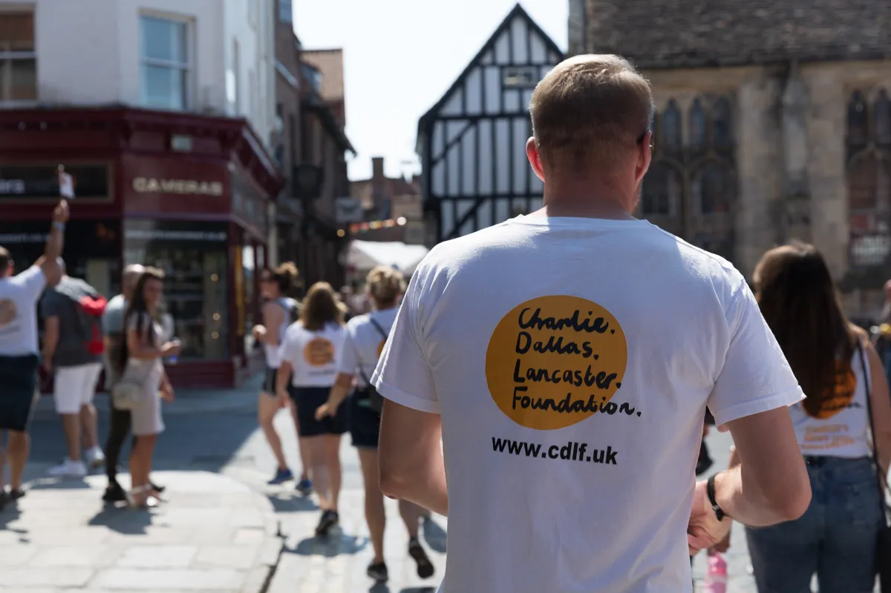
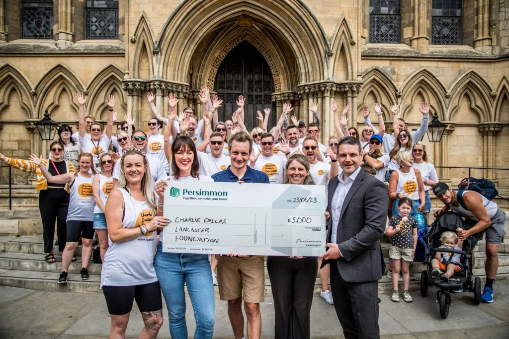
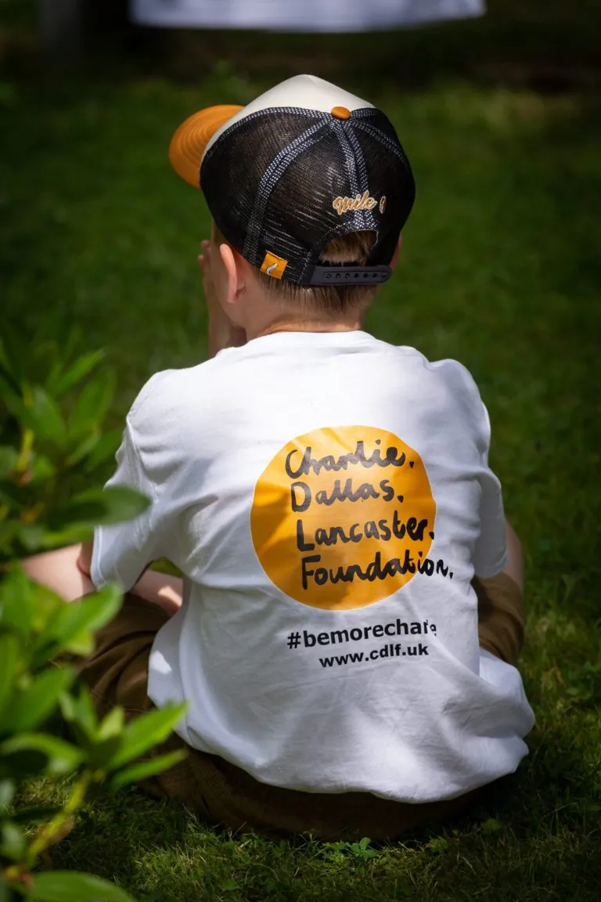
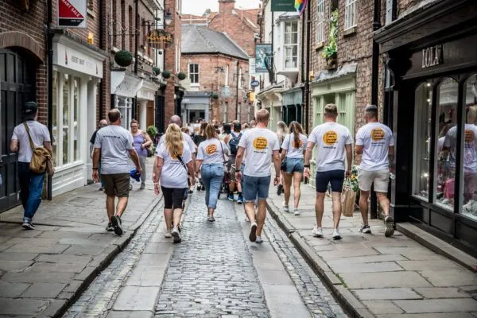
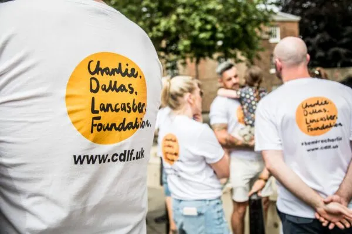
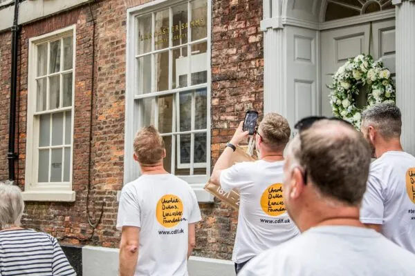
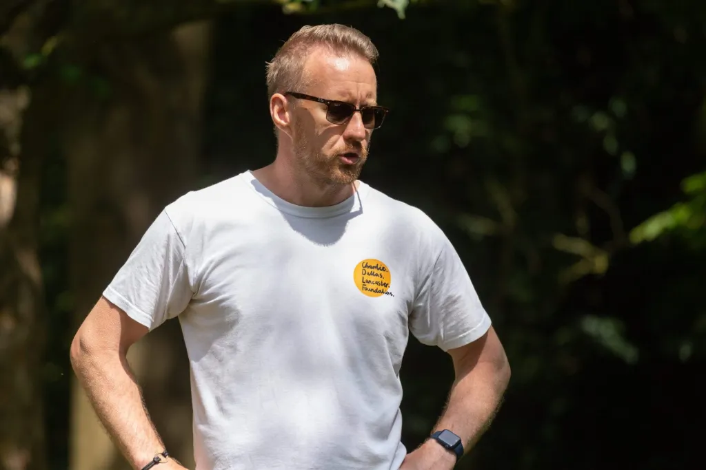

Luke in Paris, 2023Get involved
Give once or every month, raise money your own way, or join us for A Mile a Life.
“If you can simply make someone smile to bring a moment's happiness it could be enough to change their day.”


Created in the memory of Charlie Dallas Lancaster, a kind, caring devoted family man with a desire to help others, our foundation exists to support a variety of charities across York, North Yorkshire and beyond.

We are a Charitable Foundation, fundraising to allow the provision of much needed help and support to organisations and individuals working within the Mental Health and Suicide Prevention sphere.
Charities which support mental health were close to Charlie's heart. He was an advocate for raising awareness and encouraging others to speak out about their own struggles.

Luke in Paris, 2023Give once or every month, raise money your own way, or join us for A Mile a Life.
Local businesses can support CDLF through event sponsorship, company fundraising and staff taking part in our events. Annual partnerships start from £500.
If you or someone you know is struggling, these free, confidential services are there day and night.
We always want to be transparent about exactly what happens to the money we raise.
Money from donations and events like A Mile a Life is given as grants to mental health charities, most of them here in York. It has also paid for our support boards: displays in GP surgeries, gyms, classrooms and shopping centres that list local support services, each with a QR code linking to our help page.
This breakdown covers June 2021 to 2023 (£37,688), rounded to the nearest pound. Grants from 2024 onwards will be added.
Placeholder: wording to be approved by the trustees
How donations are used. The current website says: "Currently, 100% of our proceeds go to the wonderful charities we support." Please confirm the exact wording for the new site, including whether any running costs are covered separately, so we can explain it clearly here.
23 May to 23 June, every year. Charlie's birthday is 23 June.
Our largest event. Together, we cover a mile for each life lost to suicide the year prior. A number that is so difficult to try and understand.

A Mile a Life, 2022.
It brings a feeling of togetherness, something Charlie always created when he was around people. Anyone can get involved.






In the news: Persimmon Homes, 2023 and The York Press.
Can't join the walk? There are other ways to get involved
The charities and organisations we work with, in York and across the UK.
Follow us for news about A Mile a Life, our events and where the money goes.